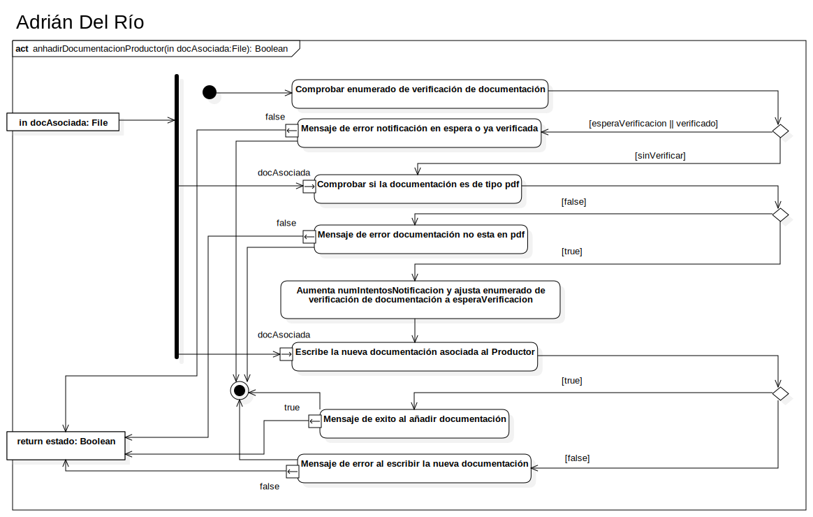

anhadirDocumentacionProductor(in docAsociada:File): Boolean
UMLActivity
Youtify
::
Clases de diseño
::
Productor - Adrian del Rio
::
Productor
::
anhadirDocumentacionProductor
::
anhadirDocumentacionProductor(in docAsociada:File): Boolean
Description
none
Diagrams

anhadirDocumentacionProductor
Nodes
InitialNode1
in docAsociada
return estado
ForkNode1
Comprobar enumerado de verificación de documentación
DecisionNode1
Mensaje de error notificación en espera o ya verificada
Comprobar si la documentación es de tipo pdf
DecisionNode2
ActivityFinalNode1
Mensaje de error documentación no esta en pdf
Aumenta numIntentosNotificacion y ajusta enumerado de verificación de documentación a esperaVerificacion
Mensaje de exito al añadir documentación
Escribe la nueva documentación asociada al Productor
DecisionNode3
DecisionNode4
Mensaje de error al escribir la nueva documentación
MergeNode1
Edges
(in docAsociada→ForkNode1)
(DecisionNode1→Mensaje de error notificación en espera o ya verificada)
(DecisionNode1→Comprobar si la documentación es de tipo pdf)
(ForkNode1→docAsociada)
(Mensaje de error notificación en espera o ya verificada→MergeNode1)
(DecisionNode2→Mensaje de error documentación no esta en pdf)
(Mensaje de error documentación no esta en pdf→MergeNode1)
(ForkNode1→Aumenta numIntentosNotificacion y ajusta enumerado de verificación de documentación a esperaVerificacion)
(DecisionNode2→Aumenta numIntentosNotificacion y ajusta enumerado de verificación de documentación a esperaVerificacion)
(Aumenta numIntentosNotificacion y ajusta enumerado de verificación de documentación a esperaVerificacion→Escribe la nueva documentación asociada al Productor)
(ForkNode1→docAsociada)
(InitialNode1→Comprobar enumerado de verificación de documentación)
(Escribe la nueva documentación asociada al Productor→DecisionNode4)
(DecisionNode4→Mensaje de exito al añadir documentación)
(Mensaje de exito al añadir documentación→return estado)
(DecisionNode4→Mensaje de error al escribir la nueva documentación)
(Mensaje de error al escribir la nueva documentación→MergeNode1)
(Mensaje de error al escribir la nueva documentación→ActivityFinalNode1)
(Mensaje de exito al añadir documentación→ActivityFinalNode1)
(Mensaje de error notificación en espera o ya verificada→ActivityFinalNode1)
(Mensaje de error documentación no esta en pdf→ActivityFinalNode1)
(MergeNode1→return estado)
(Mensaje de error notificación en espera o ya verificada→MergeNode1)
(Comprobar enumerado de verificación de documentación→DecisionNode1)
(false→return estado)
(Comprobar si la documentación es de tipo pdf→DecisionNode2)
(false→return estado)
(false→false)
(false→return estado)
(true→return estado)
(Escribe la nueva documentación asociada al Productor→DecisionNode4)
Properties
Name
Value
name
anhadirDocumentacionProductor(in docAsociada:File): Boolean
stereotype
null
visibility
public
isReentrant
true
isReadOnly
false
isSingleExecution
false
Owned Elements
anhadirDocumentacionProductor